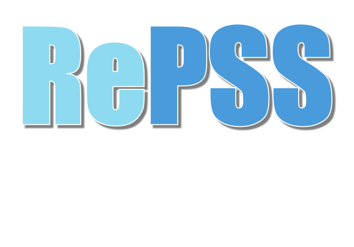

The 5th RePSS - Multimodal Fusion Learning for Remote Physiological Signal Sensing
To be held at IJCAI 2026, August 2026, Bremen, Germany
To be held at IJCAI 2026, August 2026, Bremen, Germany

The challenge is themed "Remote Physiological Signal Sensing beyond Visible Light". It focuses on contactless physiological measurement based on multimodal fusion and radar perception. Targeting the core bottlenecks of existing rPPG techniques—vulnerability to lighting, skin tone and motion interference, as well as insufficient measurement accuracy—it calls for exploring innovative approaches for complementary modalities such as NIR and radar, encourages the development of robust, anti-interference and highly reliable algorithms, and fully leverages the complementary advantages of NIR and radar in low-light adaptability, privacy protection and environmental independence. The challenge aims to promote the implementation of remote physiological monitoring systems that work reliably in complex real-world scenarios, attract teams in multimodal learning and radar perception to participate, and facilitate technological breakthroughs and progress in this field.
This challenge contains two independent tracks and will be organized on the Kaggle platform: RGB-NIR Fusion and Radar-based Heartbeat Extraction. On the Kaggle website, instructions and data will be shared, and results from participants will be submitted and ranked. The top 3 teams will be awarded certificates if the top 3 teams submit papers and are present at the workshop.
Please note that researchers who 1) previously worked with the RePSS organizing team, or 2) have collaborated/are collaborating with RePSS organizers that have access to the full datasets of OBF or VIPL-HR-V2, can participate in the challenge. Their performance will be shown in the leaderboard on the Kaggle website, but won’t be counted for the final ranking and Top-3 certificate for fairness consideration. We will clarify this issue with concerned teams during team registration via email. Thank you for your understanding!